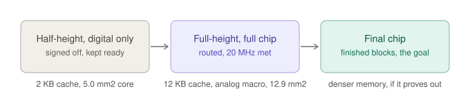
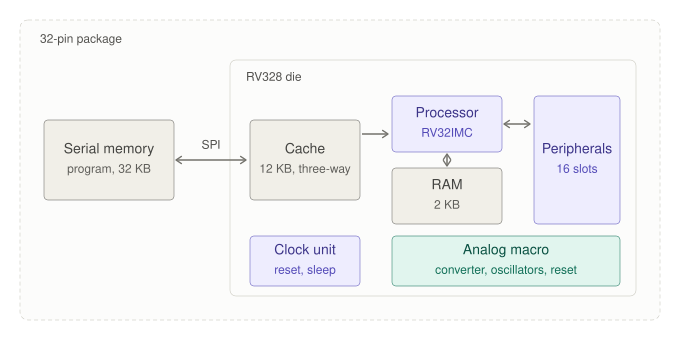
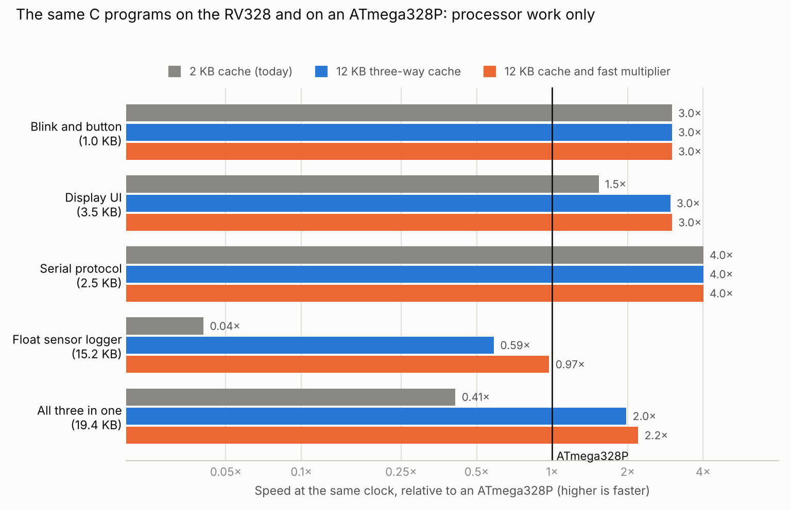
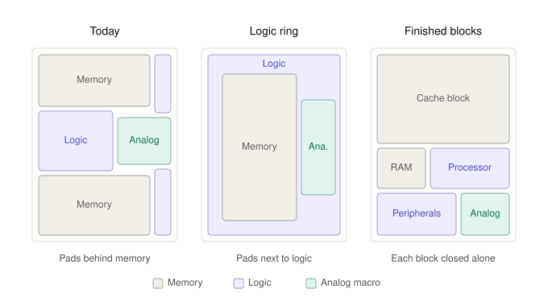
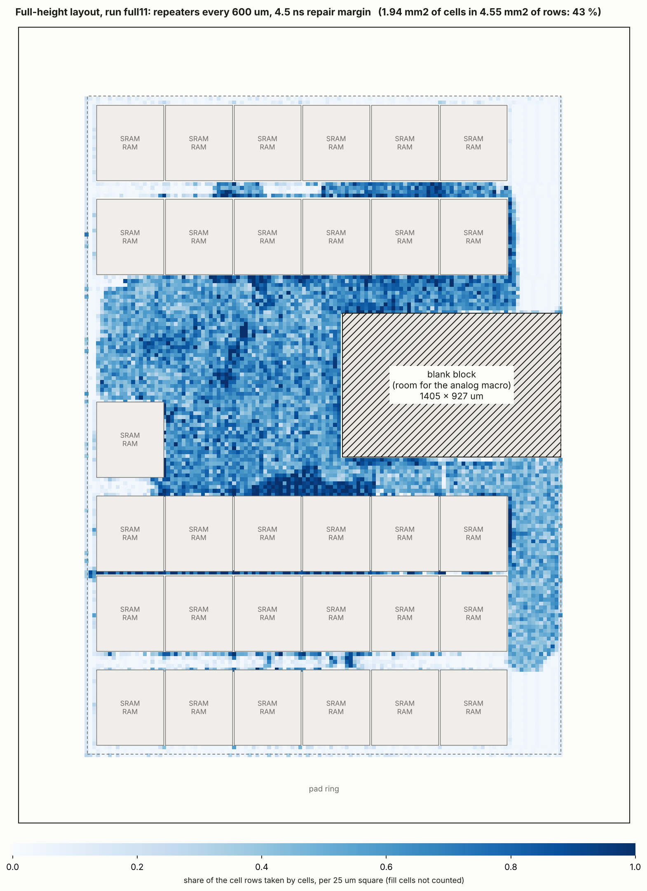

Build log
How the RV328 got to where it is: what was done at each stage, what it showed, and what was decided because of it. Newest stage last. The decisions have their own page (decisions).
The project started on 15 November 2026. Dates are given where they are known from the design conversation; the stages in between are in order but not dated. The work is done by Claude with Jon directing; nothing here has been measured on silicon.

1. The goal and the process (15 November)
Asked for: a RISC-V chip with feature parity with the ATmega328PB and the same number of pins.
Done: chose the Hazard3 processor (RV32IMC, open source), the same 32-pin positions as the ATmega328PB, and the GlobalFoundries GF180MCU process through the wafer.space shuttle.
Found: Tiny Tapeout was considered first, but it runs on a 1.8 V process; an ATmega replacement has to work at 5 V. GF180MCU has 5 V transistors and pads and an affordable shuttle. Its open kit has no flash memory, so the program cannot live on the chip the way it does in an AVR.
Decided: the program lives in a small serial memory die inside the same package and runs through a cache on the chip. The package keeps its 32 pins.

2. The digital design
Done: about 3,000 lines of Verilog around the processor: the bus, the program-memory controller, 2 KB of RAM, sixteen peripheral slots (ports, five timers, two each of serial port, SPI and I2C, the analog-to-digital converter's controller, watchdog), clocks, reset and sleep modes. The pad ring, the top-level file and the bond-out table are generated from one table so they cannot drift apart.
Checked: ten self-checking test programs run on the whole chip in simulation, through the foundry's own pad and memory models (verification).
3. First layout: it routes, but slowly
Done: the first run through the open place-and-route flow (LibreLane), half-height slot, analog blocks replaced by a stub.
Found: routed without violations, but only 11 MHz at the slowest corner. The flow's repair steps optimise as far as the target asks and no further, and the target had been loose.
4. Second and third layouts: 20 MHz, then clean
Done: taller (9-track) standard cells, synthesis for speed, the processor's clock gate moved beside the system one, timing repair after routing. Then a buffer for the crystal clock and a proper reset synchroniser in place of a constraint exception.
Found: 20 MHz at all nine corners with 5.9 ns to spare. The third layout is clean in routing, in both design-rule checkers, antenna, density and layout-versus-schematic, and its routed netlist passes three test programs at gate level (layout results).
Decided: this half-height, digital-only layout is the reference. It is the one in the layout viewer.
5. The analog blocks
Done: eleven analog blocks designed at transistor level (voltage reference, power-on reset, brown-out detector, three oscillators, the converter's front end, comparator, multiplexer, buffer, temperature sensor), simulated over corners in four rounds. Then each one drawn, checked and simulated again from its own layout.
Found: every layout problem that mattered passed the rule checks; they only showed when the extracted layout was simulated (wires side by side coupling a 5 V edge onto a node that stores a millivolt). Two oscillators came out 12 and 18 % slow from their first layouts and were retuned.
Decided: simulate the extracted layout before believing it. The blocks are assembled into one macro.
6. A smaller analog macro (19 November)
Done: the macro's plain logic (152 gates) moved from hand-drawn transistors to the foundry's standard cells.
Found: 1380 x 927 um, 1.28 mm2, down from 1.48. All checks and the whole-block test repeated.
7. Does it fit? The half-height trial (19 and 20 November)
Done: the digital layout run again with a blank block of the macro's size in the core. Three floorplans tried.
Found: the third routes without violations, but only with the flow's repair steps switched off: with the rows 74 % full there is no room to place a buffer where one is needed. One register's fan-out misses 20 MHz at the slowest corner.

Decided: not shown to work and not shown to be impossible; the ways out were a smaller digital layout or the full-height slot.
8. The question that changed the plan (20 November)
Asked: "We need feature parity with the ATmega328PB. Does a smaller cache go against that?" and then: "Speed too. This should feel like a drop-in replacement."
Done: instead of estimating, measured. Five test programs that build from the same C source for both chips, run on the simulated RV328 with different caches and on an ATmega328P in an AVR simulator (cache study).
Found:
- The 2 KB cache was far too small: a 19 KB firmware ran 5.9 times slower than with everything cached and lost serial bytes.
- A simple cache does not work even at 16 KB. The fix is the organisation, not the size.
- Floating-point code was slower than on the ATmega even with everything cached, until the processor's fast multiplier was switched on.
- An earlier estimate of the processor's speed (2 to 3 CoreMark/MHz) was too high: it measures 1.74, or 2.37 with the fast multiplier.

Decided: speed parity is a requirement. The cache becomes 12 KB, three-way, with interrupt handlers pinned; the fast multiplier goes in.
9. The full-height layout (20 November)
Done: a floorplan for the full-height slot with 31 memories, a blank block for the analog macro and the new cache and multiplier. Two runs.
Found: the first run routed cleanly and missed 20 MHz by 1.6 ns at the slowest corner, on the new multiplier. The second, with more repair margin, meets it at all nine corners (0.64 ns at the slowest) with the logic at 41 % of its rows. The routed netlist passes the boot test at gate level. Not good yet: 94 slow signal edges (one at a pad, the rest inside the logic; stage 13 corrects the first reading that they were mostly pad wires).

10. Directions set (20 November)
Looking at the full-height layout raised the question of whether the chip should be more orderly and dense, the way current commercial processors look. Three arrangements were compared:

Decided:
- The half-height, digital-only layout stays ready for a tape-out while the full chip moves ahead.
- The full-height chip is the product: full feature parity and speed.
- The next floorplan keeps the tool's flat placement but puts logic next to the pads and guides where each part goes. Separately finished blocks are the goal for the final chip, not a constraint now.
- Denser memory is the lever with the highest payoff, so it gets its own research track.
- This documentation becomes a website kept with the work.
11. Memory research, first report (20 November)
Done: a separate research pass on denser memory for this process: the foundry block taken apart by measurement, every alternative in the design kit and in open repositories looked at (memory research).
Found:
- Only 26 % of the foundry block is storage cells; the rest is decoders, read and write circuits and a guard ring, paid again for each of the 31 blocks.
- The installed kit already holds a 3.3 V memory block that is 2.7 times denser. With it the whole 32 KB program would fit on the chip in less area than today's memories. It needs a 3.3 V supply island and has no trustworthy timing data.
- About 70 % of the benchmark firmware is library code, which could sit in a small read-only block.
- Flip-flop and latch memories are worse than the foundry block, not better.
Decided: nothing yet. The report recommends the foundry block for first silicon, the read-only library as an experiment, and the 3.3 V memory for a second silicon.
12. The 3.3 V memory, looked at closely (20 November)
Asked: "Do we know how it behaves for 5 V?"
Done: the block's own transistor netlist simulated for writes and reads at three corners; its current measured in the same runs; the boundary to the 5 V logic and the supply it needs worked out.
Found:
- It cannot be run at 5 V at all: its transistors are the 3.3 V kind.
- It works in simulation and is fast: 3.2 ns from clock to output at the slow corner without wiring, an estimated 5 to 6 ns with it.
- The real cost is its supply: a regulator that needs no external capacitor, and 0.9 to 1.75 mm2 of capacitor on the chip, which takes back most of the area the denser memory frees.
- Sleep gets worse or waking gets slower: keep the memory powered and leak, or reload the program in about 30 ms.
Decided: nothing yet. The verdict is "go, if" three things hold, and not for the first tape-out. The floorplan run for the full-height chip is on hold until the memory question is settled, because either answer changes the floorplan.
13. A buffer at every pad: a run that did not pay (20 November)
Done: the floorplan run recommended after the memory research: every pad signal with its own buffer set down in front of the pad, edge strips widened from 60 to 120 um to hold them, everything else as in the full-height layout. (Stage 12 had put this run on hold. It went ahead because the 3.3 V memory is not for the first tape-out, so a floorplan around the foundry memory is needed whichever way that goes.)
Found: three things, none of them the hoped-for one.
- The run first stalled in hold repair. A stack trace of the tool showed it recomputing the timing of the whole design for every buffer it tried; a hold report showed why: the new buffer on the clock pin (PB6) delayed the external clock against the copy the oscillator stand-in takes from the same pad. The clock pin lost its buffer and the run went through.
- The layout routes clean and all pad wires are fast, but it misses 20 MHz by 1.73 ns at the slowest corner (the reference layout has +0.64 ns) and has 142 slow edges instead of 94.
- Looking at why: only one of the 94 slow edges had been a pad wire. The others are logic in the channels between memory rows, where repeaters cannot be placed where they are needed. And the wider strips drew logic out along the edges, which lengthened the tightest paths.
Decided: the earlier layout stays the reference; the pad buffers stay in the RTL as an option
(RV328_PADBUF, off by default; gen_floorplan_1x1.py --padbuf). The next floorplan gives the logic
regions instead of room (decision 11). An environment restart during routing cost half an hour; the run
was resumed from the saved state before routing.

14. Both tracks at once (20 and 21 November)
Asked: "Let's do them both in parallel": the next floorplan and the 3.3 V memory.
Done, memory: a research agent took the 3.3 V block through its three open conditions (memory research, "Third pass"). The first agent stopped at its plan's monthly limit; a second one took over from its files.
Found, memory: the block with its own wiring answers in 5.57 ns at the slow corner (8 ns was the condition) and works down to 1.8 V. A first extracted simulation that failed every read was traced to a short made by the extraction step, not by the block. The regulator needs 2 nF on chip besides the blocks' own 2.7 nF, less than half of what was feared. The level shifter adds 1.1 to 1.3 ns. Verdict: still go, for a second silicon; power-down remains a decision.
Done, floorplan: two more runs on the same idea of guiding the placer: lanes kept free for buffers
(full8), and the pad buffers alone in the reference floorplan (full9).
Found, floorplan: neither helped. With lanes kept free the logic packed tighter and part of the processor moved under the analog block: -3.09 ns at the slowest corner. The pad buffers alone left the design 8.9 ns short after global routing; its repair was recovering (+2.3 ns) but so slowly that the run was stopped. The pad buffers also only move PB0's slow edge from the pad to the wire into its buffer.
Decided: the reference layout stays. Taking room away from the placer does not guide it; the next attempt leaves the floorplan alone and asks the repair steps to break long wires instead (stage 15).

15. Repeaters on long wires: the first change that helps (21 November)
Done: the reference floorplan left as it is; the flow's design-repair steps told to break every
wire longer than 600 um with a repeater (full10), then the same with more timing margin after global
routing (full11).
Found: capacitance overloads fell from 646 to 265 and slow edges from 94 to 79, for 1.4 % more wire. The first run missed by 34 ps on one path; with more margin setup is met at all nine corners (+0.17 ns at the slowest). One 9 ps hold miss remains, on the serial-memory data input, where the constraint assumes the data changes at the clock edge itself.
Decided: full11's settings become the reference once that input constraint comes from the memory
die's data sheet and timing is rerun. Until then full4 stays. PB0's slow wire needs a hand fix.
